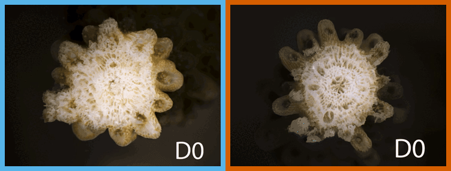

Heat and wound repair in Acropora cf. pulchra
Gump Research Station, Mo'orea, French Polynesia · May–July 2025
Does a few weeks of warmer water stop a coral from repairing a broken branch tip? We held 192 coral fragments at 28 °C or 31 °C, wounded half of them by clipping off the growing tip, and followed healing, regeneration and coral condition for 15 days.
Read the results summary
What we found
Wounded tips healed at both temperatures, but heat stopped most of them finishing regeneration, and heated fragments paled and lost most of their algal symbionts.
| Measure | 28 °C | 31 °C |
|---|---|---|
| Wounded fragments with new radial corallites by Day 15 | 12 of 12 | 4 of 12 |
| Symbionts on Day 15 (million cells per cm²) | 0.97 | 0.21 |
| Photosynthetic efficiency (Fv/Fm) on Day 14 | 0.67 | 0.56 |
| Skeletal growth over 15 days | 16.0% | 10.2% |
The results summary has the full story, the statistics and the caveats.
Also here
- Code and data on GitHubEvery number, table and figure rebuilds from the raw data with one command.
- GlossaryWhat the coral, measurement and statistics terms mean.
- How to rerun or change the analysisA walkthrough for anyone picking up the code.